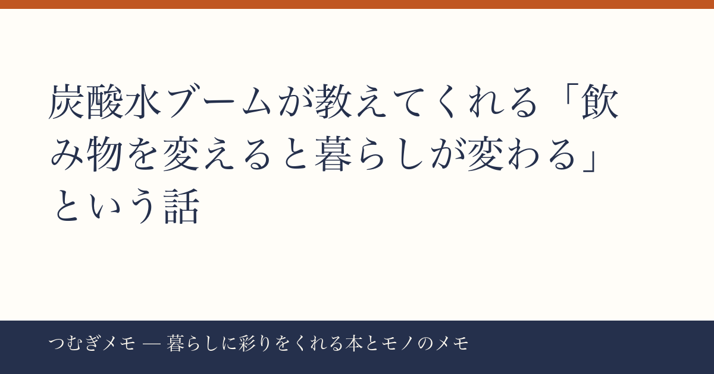

こんにちは、つむぎです。今週の楽天ランキングを眺めていたら、ある「かたまり」が目に飛び込んできて、これは記事にするしかないと思いました。
この記事でわかること： 今週の楽天でランキング上位を独占した「炭酸水」のトレンドを入口に、飲み物をちょっと変えるだけで日常の質感がどう変わるのかを、実際の数字と行動に落とした話をします。
今週の要点
- 炭酸水500ml×48本パックが楽天ランキングで3位・10位に同時ランクイン
- 「同じカテゴリ・ほぼ同じ商品」が複数の順位に並ぶのは、単発ブームでなく習慣化の証拠
- 強炭酸×無糖という仕様が「生活に彩りを添えるのにお金をかけすぎない」現代の感覚にフィットしている
---
今週の楽天総合ランキングで、強炭酸水500ml×48本パックが3位と10位に同時に入っていました。商品名こそ微妙に違うものの、仕様はほぼ同じ。レビュー件数はそれぞれ16,949件・16,933件、評価はどちらも★4.68という数字が並んでいます。
これが意味することを少し考えてみます。1商品が上位に入るのは「セールのタイミングがよかった」で説明できます。でも、ほぼ同じカテゴリの商品が3位と10位に分かれて入ってくるのは、「炭酸水をまとめ買いするという習慣が、複数の人の購買行動として定着している」証拠です。単発の衝動買いではなく、ストックとして家に置くものとして選ばれている。
レビューが16,000件を超えているということは、それだけの人が「届いたら感想を書く気になる商品」として受け取っているわけで、「なんとなく選んだ」ものではないことがわかります。
今日できること： まず1ケース(24本)だけ試注文してみる。48本が多すぎると感じるなら半量から始めて、2週間後に残量を確認する。それが「自分の消費ペース」を知る最短ルートです。
---
炭酸水の仕様として「強炭酸」「無糖」が前面に出されているのは偶然ではないと思っています。
ここ数年で、「なんとなく甘い飲み物を手に取る」行動に対して小さなブレーキをかける人が増えているという調査結果も報じられています。砂糖を減らしたいけれど、水だけだと物足りない。そのギャップを埋めるのが強炭酸水です。炭酸の刺激が「何かを飲んでいる感」を十分に与えてくれるので、甘い飲み物への欲求を代替できる。
「暮らしに彩りを添える」というブログのテーマで言うと、炭酸水はコスパの高い「小さな儀式」を作りやすいアイテムです。食事前にグラスに注いでレモンを一切れ絞るだけで、その5分間が少し特別になる。1本あたりの単価が低いからこそ、毎日の習慣にしても家計へのダメージがほぼない。
暮らしのアップグレードには「高いものを買う」だけでなく「安いものを賢く使い続ける仕組みを作る」アプローチがあって、炭酸水はその教科書的な例です。
今日できること： 今日の昼食か夕食に、いつもの飲み物を炭酸水に替えてみる。グラスに氷を入れて注ぐだけで、食卓の雰囲気が変わります。柑橘系の果物があればなおよし。
---
48本まとめ買いを選ぶ人が増えているという事実は、「その都度コンビニで買う」から「家にストックを持つ」という暮らしの設計の変化を表しています。
これは炭酸水に限った話ではないのですが、「家に常備するもの」を意識的に選ぶ習慣は、日々の小さな決断を減らしてくれます。冷蔵庫を開けたときに「今日は何を飲もうか」と悩まないで済む。心理的なコストを下げることで、別のことを考えるエネルギーが生まれる。
この考え方は本でも繰り返し語られてきました。行動経済学の観点から「選択の疲弊」を減らす仕組みの作り方を解説した
楽天で『エッセンシャル思考』を見る / Amazonで『エッセンシャル思考』を見るや、シンプルな生活設計の実践書として根強い人気の
楽天で『ぼくたちに、もうモノは必要ない。』を見る / Amazonで『ぼくたちに、もうモノは必要ない。』を見るなどは、「何をストックするか」を考えるときの視点として今でも参考になります。
「お気に入りのものを大量に持つ」ことと「ミニマリズム」は矛盾しているように見えますが、実は同じ根を持っています。どちらも「無意識の選択を意識的な設計に変える」行為です。炭酸水のまとめ買いは、その小さな実践として捉えることができます。
今日できること： 自分が週に何度も「切らさないようにしよう」と思いながら買いに行っているものをメモしてみる。それがまとめ買い候補のリストです。
---
Q. 炭酸水は毎日飲んでも健康に問題ない？
A. 無糖の炭酸水であれば、基本的には水と同様に考えられています。ただし「効果を保証する」ことはできないので、気になる方はかかりつけの医師や管理栄養士に確認するのが確実です。炭酸が苦手な方や胃に不安のある方は無理に取り入れる必要はありません。
Q. コンビニで都度買うのとまとめ買いでは、実際にどれくらい違う？
A. 今回ランクインしていた48本パックで計算すると、1本あたりの単価はコンビニの無糖炭酸水より相当抑えられます。ただし「今週の要点」で挙げたとおり、大事なのは金額差より「ストック管理の習慣ができるかどうか」です。安いからといって飲まないまま溜まっても意味がないので、まず24本から試す判断が合理的です。
Q. 強炭酸と普通の炭酸水、どちらを選ぶべき？
A. 「物足りなさ」を感じるかどうかが判断基準です。甘い飲み物の代替として使いたい場合は強炭酸のほうが満足感を得やすい傾向があります。料理に使いたい、または炭酸が苦手気味という方は通常炭酸から試すのが無難です。
---
今週は「炭酸水の同時ランクイン」という一見地味なデータから、暮らしの設計という話に広げてみました。数字をきっかけに「なぜこれが売れているのか」を考えると、自分の生活を見直すヒントが見つかることがあります。
このブログ「つむぎメモ」はAIと一緒に運用している実験的なメディアです。毎週のトレンドデータをAIと一緒に読み解きながら、「暮らしのちょっとした豊かさ」につながる話を書いています。記事の視点や選び方に「AIとの共作」ならではの部分もありますが、読んで何か一つでも持ち帰ってもらえるものがあれば嬉しいです。
来週もよろしくお願いします。
— つむぎ (X: @tsumugi_memo15)
📚 目次へ